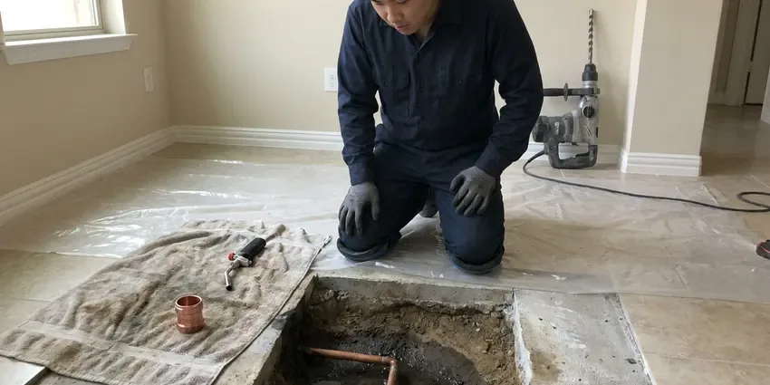

Gas Leak Repair in Sumter, SC
From black iron threads to CSST fittings and polyethylene yard pipe, KBN Plumbing repairs every part of a Sumter, SC gas system.
- Red Tag Repairs
- Permits Handled
- Licensed Gas Plumbers
- CSST Bonding

Locked Meter or Red Tag in Sumter, SC? We Can Help.
Licensed gas plumbers in Sumter, on call nights and weekends for leaks.
Gas Leaks Found & Fixed in Sumter, SC
KBN Plumbing gets a lot of calls after the utility has locked a meter. Gas stays off until a licensed contractor makes the repair and passes a pressure test, which is where we come in. Those calls go to the front of the line, since a locked meter means cold showers and no stove. We test the pool heater line while we are there.
Work we handle every week:
- Polyethylene yard line installation with tracer wire
- Meter riser replacement
- Electronic combustible gas detection at each joint

Additional Plumbing Repair Services in Sumter, SC
We offer expert plumbing repair services across Sumter, SC to stop leaks, clear blockages, and keep every fixture working the way it should.


Customers
Why Choose KBN Plumbing for Gas Leak Repair in Sumter, SC?
The leak you smelled is only the start. We check connectors and valves on every gas appliance in the house. Anything near failure gets written up with a price, and you decide whether to fix it now or later on your own schedule.
- Local Techs, Our plumbers work Sumter every day and know where the old steel lines run, so the search goes faster.
- Whole System Check, We test every branch and appliance, not just the leak you called about.
- Gauge Tested, Every repair is tested on a gauge before the gas goes back on.
Citywide Coverage
Propane homes past the Sumter limits get the same response as houses on the utility main. We test from the second-stage regulator to the last appliance. Long driveways are no problem. If the leak is on the tank side, we call your supplier and stay until they arrive or the system is safe.
Experienced Team
Our gas plumbers carry a fuel gas license on top of their plumbing license where one is required, and most have ten years or more on gas calls. Before and after readings are a habit, even on a five-minute connector swap. Slow leaks are their specialty. Years of slow leaks taught them where to look first, starting with crawlspace unions.
Safety-First Approach
Utility red tags are respected. We do not remove a lock or a tag the utility placed. After the repair and test, we notify the utility, and they send someone to open the meter and relight, or they let us relight where their policy allows.
Trusted Certified Sumter Plumbing Services Professionals
At KBN Plumbing, we are proud to offer certified plumbing services throughout Sumter, SC. Those papers on the wall mean something. Our plumbers hold recognized industry credentials, and they follow strict safety and quality rules on every repair, installation and maintenance call we run.
Call Us Now PHCC Plumbing Contractor Recognition
PHCC Plumbing Contractor Recognition Better Business Bureau (BBB) Accreditation
Better Business Bureau (BBB) Accreditation Angi Certified Pro
Angi Certified Pro ISO 9001 Quality Management Certification
ISO 9001 Quality Management CertificationInsured Gas Leak Repair in Sumter, SC
Appliance Connector Replacement in Sumter
Old uncoated brass connectors, the kind made before the mid-1970s, are the subject of consumer safety warnings because the flare nut can separate from the tube. If your range or water heater still has one, it should come out. We see them weekly. The replacement is a coated stainless connector sized for the appliance, with a new ball valve and a sediment trap where one is required. Bubble testing follows before the burner is lit.

Underground Gas Line Repair in Sumter
Yard lines run from the meter to the house, and often on to a detached garage, a pool heater, a grill or an outdoor kitchen. Steel pipe in the ground corrodes wherever the wrap was nicked during the original install. Roots and settling do damage too. We call 811 for locates, dig at the suspected spot and replace the bad run with yellow polyethylene pipe and tracer wire. Sand goes around the new pipe before backfill, per Sumter trench rules.
Gas Line Replacement and Upgrades in Sumter, SC
Adding a gas range or a tankless heater can overload pipe that was sized years ago for just a furnace and a water heater. We add up the BTU load and measure the run length before choosing a pipe size. Undersized pipe starves burners. Where the old pipe is rusty or poorly threaded, we replace it with black iron or CSST, whichever reaches easier. A big tankless unit may also need a bigger meter from the utility.
Interior Gas Pipe Repair in Sumter, SC
Inside the house, gas leaks hide at unions in the basement and at the threaded nipple behind the furnace, places nobody looks. We work from the meter inward, testing each section as we go. Drywall stays intact when possible. Rerouting with CSST past a leak in a finished wall is often cheaper than cutting and patching drywall. Nothing is turned back on until the gauge holds steady.
Gas Leak Repair Cost Comparison in Sumter, SC
Price follows access. Expect $150 to $450 for a connector or fitting repair you can reach, with the leak test included. Interior pipe inside finished walls or attics often lands between $300 and $1,000, and a buried yard line can run $1,000 to $4,000 depending on length, depth and whether we can bore instead of trench. The written estimate comes after the leak is located and before any repair begins. Permit fees are listed separately.
Red Tag Gas Repairs in Sumter
A red tag on your meter or appliance means the utility found a leak or unsafe condition and will not restore gas until a licensed contractor fixes it. The tag usually says what they found, so we start there. Then we test everything. After the repair, we run the pressure test the utility or inspector requires and send them the paperwork. Relights are scheduled with the utility, usually within a day or two.
Gas Leak Detection in Sumter
Some leaks announce themselves with a hiss you can hear across the room, and others lose a few cubic feet a day and only show up on the bill. The slow ones are where the gauge earns its keep. We isolate, then sniff. We run the test twice, with appliance valves closed and then open, because some leaks only show downstream of a valve. Finding the exact joint keeps the job small.

Commercial Gas Leak Repair in Sumter
Commercial gas piping often runs at 2 psi or higher with regulators at each appliance bank, so a leak test there is not the same as a house test. We check regulator lockup and vent lines along with the joints. Rooftop units leak too. Where downtime costs you money, we isolate only the affected branch and keep the rest of the building running. Staff get a short briefing on the shutoff locations.
Local Gas Leak Repair in Sumter, SC
Local matters with gas, because meter setups and inspection habits vary from one town to the next, even inside one county. KBN Plumbing works Sumter and the towns around it every day. Our techs know which neighborhoods still have old steel yard lines. That saves time digging test holes.
Searching 'gas leak repair near me' usually happens with a smell in the house, so distance matters. KBN Plumbing keeps gas-qualified plumbers working across Sumter, SC, with detectors and pipe on every truck. We can usually reach most neighborhoods within an hour or two of the utility clearing the scene and shutting the meter. Let dispatch know about any meter tag.
KBN Plumbing at a Glance
- Fully licensed plumbing team covering Sumter, SC
- 24/7 emergency service with same-day scheduling
- Clear written estimates, no hidden fees
- 4.8-star rated by 596+ South Carolina customers
Sumter Map
Sumter Information
- Population
- 42,766
- Area codes
- 803/843/864
- Service area
- Sumter and towns within a 40 mile drive
- Nearby
- Columbia, Florence, Summerville, Goose Creek
Warm weather for most of the year means water heaters, irrigation lines and outdoor fixtures in South Carolina see steady use with little seasonal rest. Weather, moisture and settling all work on buried gas pipe, and a pressure test every few years catches trouble in Sumter, SC homes before it gets serious.
Talk to a Plumber
Call KBN Plumbing for reliable plumbing work done by licensed pros in Sumter, SC.
Our Specialized Plumbing Services in Sumter, SC
At KBN Plumbing, we handle the full list of plumbing services across Sumter, SC. From leak detection to full system installs, our team works fast and charges fair prices on homes and commercial properties alike. Take a look at our core services below:


How a Gas Leak Repair Works in Sumter, SC
From your call to the final gauge reading, this is what to expect.
Call Us
Smell gas? Leave, call the utility, then call (864) 588-3813 for the repair. We tell you when to expect us.
Find the Leak
We gauge test the system and sniff each joint. You get a firm price before work begins.
Fix and Restore
The leak is repaired, the system passes a pressure test, and we light the appliances back up or set it up with the utility.
Frequently Asked Questions About Gas Leak Repair in Sumter
Most gas leak repairs in Sumter, SC land between $150 and $2,000, and the spread comes from where the leak is and how hard it is to reach. A loose fitting at an exposed appliance is at the bottom of that range. Excavation costs more. Buried pipe or a repair inside finished walls pushes the price toward the top, sometimes past $2,000. You get a written number once the leak is found.
We stand behind our gas work with a written workmanship warranty. A leak at our repair during the warranty gets fixed by us.
Walk out first. Skip light switches and your phone until you are outside. Call the gas utility from the street, then call KBN Plumbing at (864) 588-3813 for the repair once their tech has shut the meter and cleared the house. Leave the door open behind you if it is quick.
For CSST we use TracPipe and Gastite, matched to whatever is already in the house, since the brands do not share fittings. Every valve and fitting we install is listed for gas.
Hissing, dead grass over a buried line, bubbles in standing water and a gas bill that climbs for no reason. Some people notice headaches that ease outdoors.
Smell, sound and sight. The smell is like rotten eggs or sulfur. The sound is a hiss or whistle near a pipe or appliance. The sight can be dead grass over a buried line, bubbles in a puddle, or dust blowing at a spot in the yard where nothing else moves.
Labor on our gas repairs is covered under our workmanship warranty, and parts carry their manufacturers' warranties. If a joint we made starts leaking, we come back and fix it.
Plan on one to two hours for most fitting and connector repairs. Underground work runs most of a day, counting the dig and the test.
What People Are Saying About Our Plumbing Experts?

Jessica T.
We were adding a gas range in a kitchen remodel and needed a new line run from the meter. The plumber pulled the permit, ran the pipe through the crawl space, and had it inspected and approved within the week.
Gas Line Repair · Goose Creek, SC
Greg S.
I manage a small strip center with six tenants. KBN Plumbing handles our annual backflow testing and fixed a recurring clog in the shared sewer line that had been backing into the nail salon. Their reports come in clean and on time.
Commercial Plumbing · Rock Hill, SC
Tyler J.
We bought a taller comfort height toilet for my dad, who just had knee surgery. The plumber pulled the old one, found the flange was cracked, and replaced it before setting the new bowl. Took about two hours.
Toilet Installation · Goose Creek, SCMark T.
The floor drain in our office break room backed up every few weeks. The plumber ran a cable, then put a camera down and found roots at a joint about thirty feet out. Seeing it on the screen made the decision easy.
Drain Cleaning · Florence, SCDaniel K.
A pipe burst in the garage ceiling at 11 at night. Someone answered on the second ring, and the plumber was in my driveway about fifty minutes later. He shut off the main, cut out the split section, and had water back on before 2 am.
Emergency Plumbing · Rock Hill, SC
Lisa C.
Water was pouring out from under the washing machine on a holiday weekend. KBN Plumbing talked me through closing the valves over the phone and had a plumber at the house within ninety minutes. It was a burst fill hose.
Emergency Plumbing · Summerville, SC